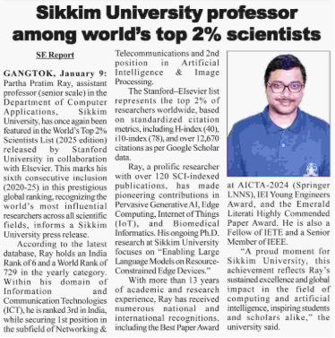
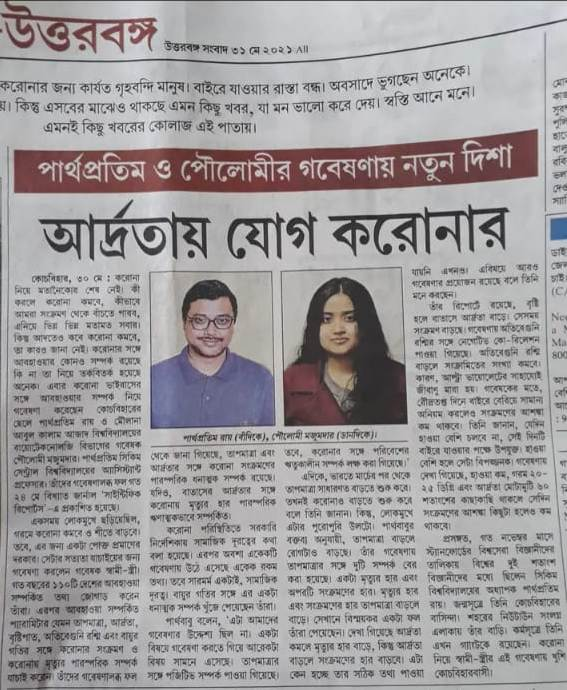
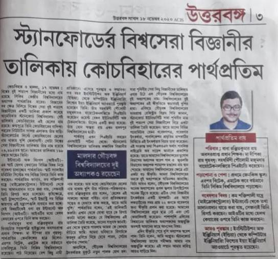

Featured in Sikkim Express e-paper highlighting recognition as one of the
World’s Top 2% Scientists, dated 10 January 2026.
View e-paper news

Featured in The Indian Express e-paper highlighting recognition as one of the
World’s Top 2% Scientists, dated 5 October 2025.
View e-paper news
Featured in Education Times e-paper highlighting recognition as one of the
World’s Top 2% Scientists, dated 23 September 2025.
View e-paper news
Featured in Jagran Josh e-paper highlighting recognition as one of the
World’s Top 2% Scientists, dated 23 September 2025.
View e-paper news
Featured in Uttarbanga Sambad e-paper with a Bengali news article titled
আর্দ্রতায় যোগ করোনার, dated 31 May 2021.

Featured in Sikkim Chronicle e-paper highlighting recognition as one of the
World’s Top 2% Scientists, dated 2 December 2020.
View e-paper news
Featured in Uttarbanga Sambad e-paper reporting inclusion in
স্ট্যানফোর্ডের বিশ্বসেরা বিজ্ঞানীর তালিকায় কোচবিহারের পার্থপ্রতিম,
dated 18 November 2020.

Featured in Uttarbanga Sambad e-paper featuring an education interview in Bengali:
শিক্ষার্থীদের আগ্রহের ক্ষেত্রে সঠিকভাবে চিহ্নিত করতে হবে,
dated 23 June 2019.
View full Bengali interview (PDF)